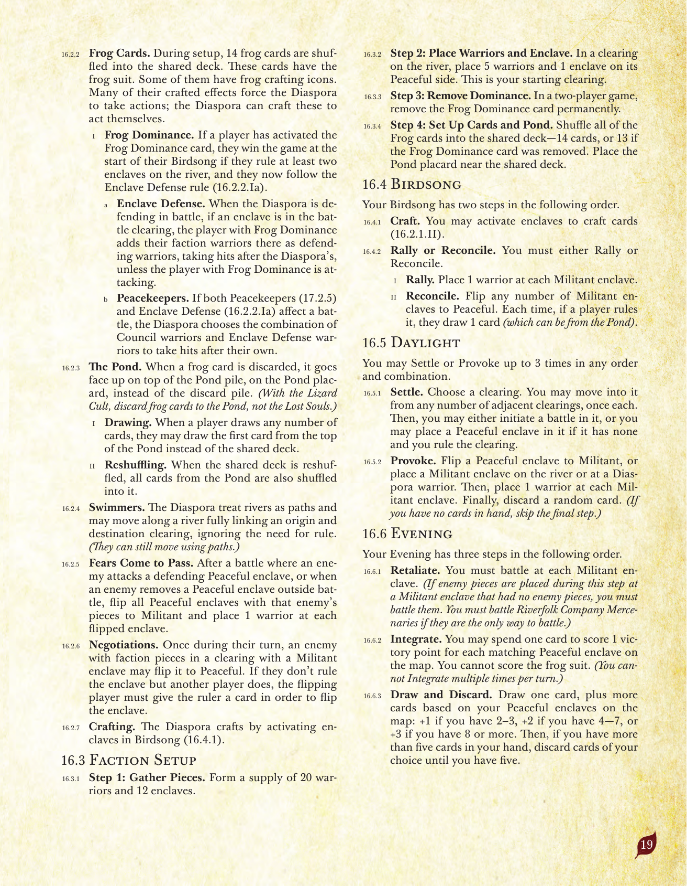
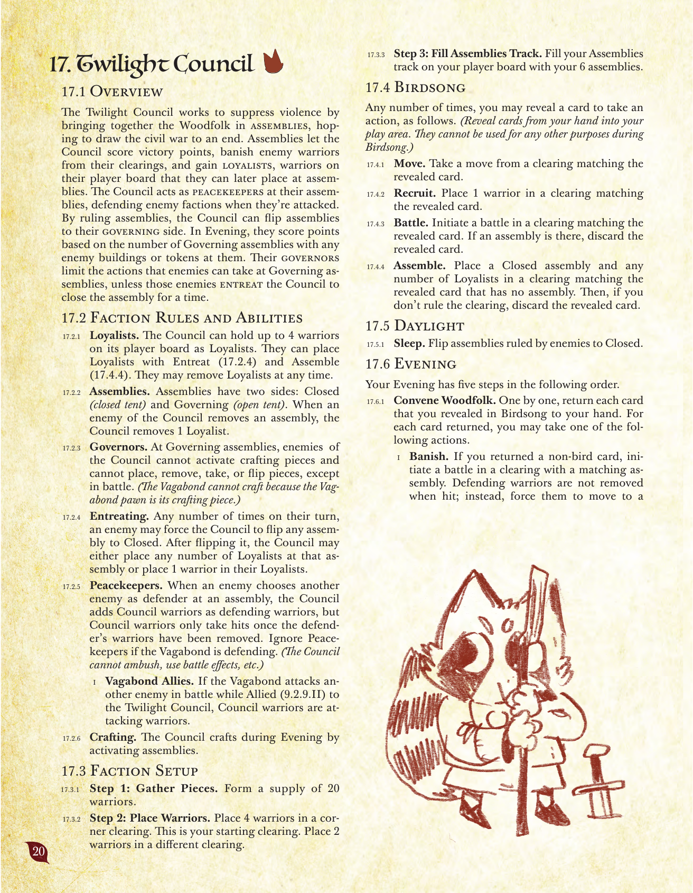
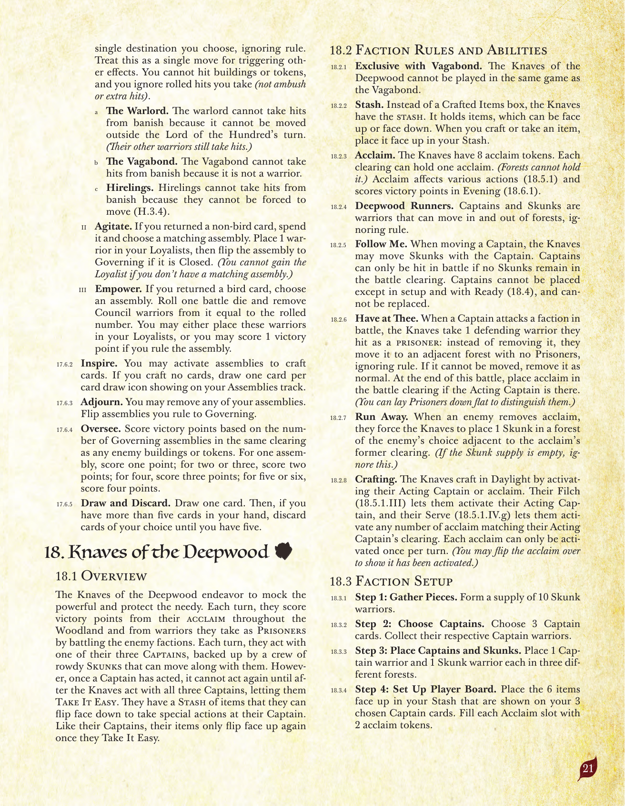
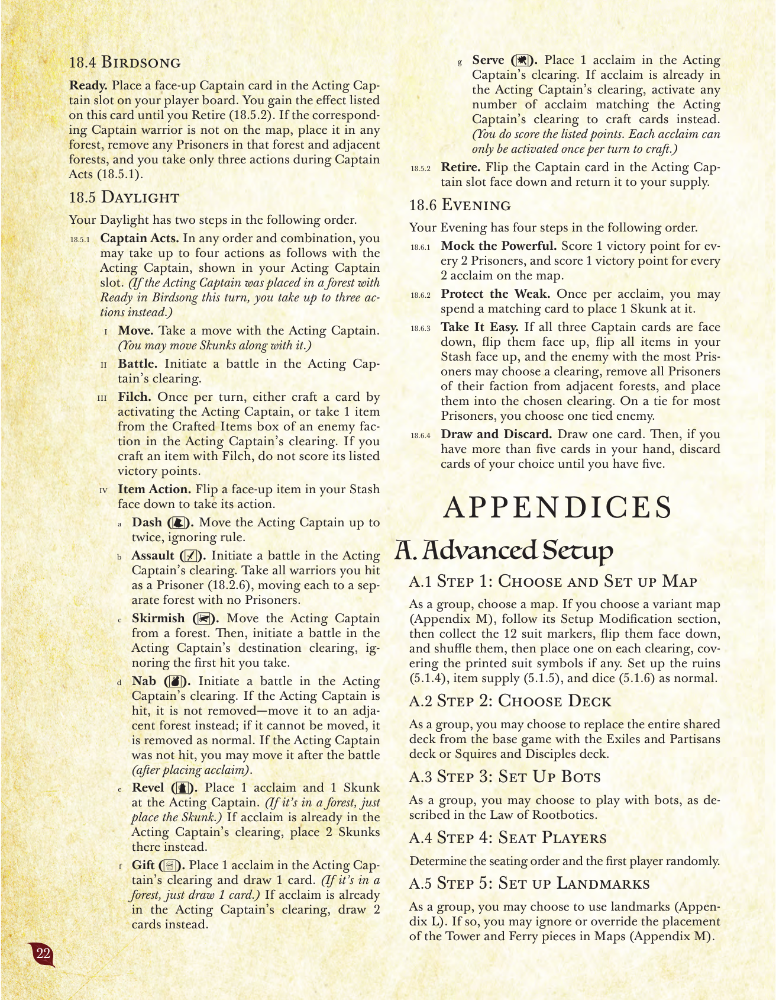

故郷の拡張：蓮葉流民・黄昏議会・深林無頼（法典編）
原題: The Homeland Expansion ／『根の法典』第16〜18章。
訳語について
本拡張（Homeland Expansion）は2026年6月時点で日本語版が未発売であり、公式な派閥名称が存在しない。本ドキュメントでは、既存の日本語版派閥名（猫野侯国・鷲巣王朝・森林連合・放浪部族・蜥蜴教団・河民商団・地底公領・黒烏結社・百獣王国・甲鉄衛団）に見られる「漢字4文字」の命名パターンに合わせ、独自に以下の訳語を当てている：Lilypad Diaspora→蓮葉流民 、Twilight Council→黄昏議会 、Knaves of the Deepwood→深林無頼 。将来の公式日本語版で異なる訳語が採用される可能性がある。
本章の入門的な解説・図解は故郷の拡張（入門） も参照のこと。
目次
16. 蓮葉流民
16.1 概要
蓮葉流民は、森における安全な避難所として「飛び地」を確立したいと考えている。平和な面の飛び地に一致するカードを消費することで得点する。これらの飛び地は流民の文化を森に持ち込み、その開拓地に新たな蛙のスートを加える。これにより蛙カードが共有デッキに加わり、蛙カード専用の新しい捨て札置き場である「池」も加わる。しかし、平和な飛び地は流民を守ってくれない。兵士を得るには、主戦的な面の飛び地が必要である。流民が現実の、あるいは想像上の脅威を排除しようとするにつれ、これらの飛び地はその開拓地のスートを覆ってしまい、流民は毎ターン戦闘を強いられ、森における重要な支持を失っていく。これを防ぐために、流民は「和解」を行って主戦的な飛び地を平和な状態に戻すことができ、敵側も交渉によって同様のことができる。しかし敵は、流民と戦って平和な飛び地を主戦的な状態に変えることもでき、人々の恐れが現実になっていく。
16.2 派閥固有のルールと能力
飛び地。 流民は飛び地トークンを12個持ち、両面式である――片面は平和、もう片面は主戦である。各開拓地は飛び地を1つしか保持できない。
開拓地のスート。 平和な状態の間、飛び地はその開拓地に蛙のスートを加え、複数スート化する。主戦的な状態の間、飛び地はその開拓地のスートを蛙のスートに置き換える。（平和な飛び地にあるクラフト駒は、蛙アイコンまたは印刷された開拓地アイコンのどちらにも使える。主戦的な飛び地にあるクラフト駒は蛙アイコンにのみ使える。蛙アイコンは万能アイコンとして使うことができる。）一致の判定。 さまざまな効果が、カードなど何かのスートと一致する開拓地を対象とする。主戦的な飛び地のある開拓地は蛙のスートと一致するとみなせる。平和な飛び地のある開拓地は蛙のスートまたは印刷された開拓地のスートのいずれかと一致するとみなせる。（例えば蜥蜴教団は、蛙カードを使って、平和な飛び地のある狐の開拓地に狐の祭壇を建設できる。蛙のスートも持っているからである。森林連合は、平和な飛び地のある狐の開拓地で反乱を起こすために、狐カードと蛙カードを組み合わせて消費できる。）
蛙カード。 準備の際、蛙カード14枚が共有デッキにシャッフルされる。これらのカードは蛙のスートを持つ。一部には蛙のクラフトアイコンが示されている。それらの多くがクラフトされた効果によって流民にアクションを強制するため、流民はこれらを自分でクラフトして行動することもできる。
蛙の支配。 あるプレイヤーが「蛙の支配」カードを発動した場合、自分の鳥歌フェイズの開始時に河沿いの飛び地を少なくとも2つ支配していれば即座に勝利し、以後「飛び地の防衛」ルール（16.2.2.Ia）に従う。
飛び地の防衛。 流民が防御側として戦闘する場合、戦闘の開拓地に飛び地があれば、「蛙の支配」を持つプレイヤーは自分の派閥の兵士を防御側の兵士としてそこに加える。これらの兵士は、流民の兵士がヒットを受けた後にヒットを受ける（ただし「蛙の支配」を持つプレイヤーが攻撃側である場合を除く）。平和維持。 「平和維持」（17.2.5）と「飛び地の防衛」（16.2.2.Ia）の両方が1つの戦闘に影響する場合、流民は黄昏議会の兵士と飛び地防衛の兵士のどちらの組み合わせを、自分の兵士の後にヒットを受けさせるか選ぶ。
池。 蛙カードが捨てられるとき、それは捨て札置き場の代わりに「池」プラカードの上に表向きで置かれる（蜥蜴教団がいる場合、蛙カードは迷い子の山ではなく池に捨てる）。
引く。 あるプレイヤーがカードを何枚か引くとき、共有デッキの代わりに池の一番上のカードを最初の1枚として引いてよい。再シャッフル。 共有デッキが再シャッフルされるとき、池にあるすべてのカードもそこへシャッフルされる。
泳ぎ手。 流民は河を道として扱い、出発地と目的地の開拓地を完全につなぐ河に沿って移動できる。この際、支配の必要性を無視する。（道を使った移動も引き続き可能である。）恐怖の的中。 敵が防御中の平和な飛び地を攻撃した戦闘の後、または敵が戦闘外で平和な飛び地を除去したとき、その敵の駒がある平和な飛び地をすべて主戦的な状態に裏返し、裏返した各飛び地に兵士を1体ずつ置く。交渉。 自分のターン中に1回、主戦的な飛び地に派閥駒を持つ敵は、それを平和な状態に裏返してよい。その飛び地を別のプレイヤーが支配している場合、裏返す側のプレイヤーはその飛び地を裏返すために、支配者にカードを1枚渡さなければならない。クラフト。 流民は鳥歌フェイズ中、飛び地を発動することでクラフトする（16.4.1）。
16.3 派閥固有の準備手順
ステップ1：駒の準備。 兵士20個と飛び地12個の供給を用意する。ステップ2：兵士と飛び地の配置。 河沿いの開拓地に、兵士5体と平和な面の飛び地1つを置く。これが自分の開始開拓地となる。ステップ3：支配カードの除去。 2人プレイの場合、「蛙の支配」カードをゲームから永久に除去する。ステップ4：カードと池の準備。 蛙カードをすべて共有デッキにシャッフルする――14枚、ただし「蛙の支配」カードを除去した場合は13枚。「池」プラカードを共有デッキの近くに置く。
16.4 鳥歌フェイズ
鳥歌フェイズには、以下の順で2つのステップがある。
クラフト。 飛び地を発動して、カードをクラフトしてよい（16.2.1.II）。動員または和解。 「動員」または「和解」のいずれかを行わなければならない。
動員。 各主戦的な飛び地に兵士を1体置く。和解。 何度でも、主戦的な飛び地を平和な状態に裏返してよい。そのたびに、それを支配しているプレイヤーがいればカードを1枚引く（池から引いてもよい）。
16.5 昼光フェイズ
「定住」または「挑発」を、任意の順序・組み合わせで最大3回まで行ってよい。
定住。 開拓地を1つ選ぶ。隣接する任意の数の開拓地から、それぞれ1回ずつそこへ移動してよい。その後、そこで戦闘を開始するか、その開拓地に飛び地がなく自分がそこを支配していれば平和な飛び地を1つ置いてよい。挑発。 平和な飛び地を主戦的な状態に裏返す、または河沿いか流民の兵士のいる開拓地に主戦的な飛び地を置く。その後、各主戦的な飛び地に兵士を1体ずつ置く。最後に、ランダムなカードを1枚捨てる。（手札にカードがない場合は、この最後のステップを省略する。）
16.6 夕闇フェイズ
夕闇フェイズには、以下の順で3つのステップがある。
報復。 各主戦的な飛び地で戦闘を行わなければならない。（このステップ中に、敵駒のなかった主戦的な飛び地に敵駒が配置された場合、それらと戦闘しなければならない。河民商団の傭兵が戦闘できる唯一の対象である場合は、それと戦闘しなければならない。）統合。 カードを1枚消費して、地図上の一致する平和な飛び地1つにつき勝利点を1点得てよい。蛙のスートでは得点できない。（1ターンに複数回統合することはできない。）カードを引いて捨てる。 カードを1枚引き、さらに地図上の平和な飛び地の数に応じて追加で引く：2〜3個なら+1枚、4〜7個なら+2枚、8個以上なら+3枚。その後、手札が5枚を超えている場合は、5枚になるまで好きなカードを捨てる。
17. 黄昏議会
17.1 概要
黄昏議会は、森の民を集会に集めることで暴力を抑え込み、内戦を終わらせたいと働きかける。集会は議会に勝利点を得させ、敵の兵士を自分たちの開拓地から追放し、後に集会へ配置できる忠誠兵を獲得させる。議会は自分たちの集会において平和維持者として振る舞い、攻撃を受けた敵派閥を守る。集会を支配することで、議会は集会をその統治面に裏返すことができる。夕闇フェイズには、敵の建物やトークンがある統治中の集会の数に基づいて得点する。議会の統治者は、統治中の集会で敵が取れるアクションを制限するが、敵がしばらく集会を閉鎖するよう議会に請願した場合は例外となる。
17.2 派閥固有のルールと能力
忠誠兵。 議会は自分の派閥ボード上に、忠誠兵として兵士を最大4体保持できる。「請願」（17.2.4）と「集会の設立」（17.4.4）によって忠誠兵を配置できる。いつでも忠誠兵を取り除いてよい。集会。 集会には閉鎖（閉じたテント）と統治（開いたテント）の2つの面がある。議会の敵が集会を除去したとき、議会は忠誠兵を1体除去する。統治者。 統治中の集会では、議会の敵はクラフト駒を発動できず、戦闘以外で駒を配置・除去・取得・裏返すこともできない。（放浪部族は、放浪部族の駒自体がクラフト駒であるため、クラフトできない。）請願。 自分のターン中に何度でも、敵は議会に対し、任意の集会を閉鎖状態に裏返すよう強制できる。裏返した後、議会はその集会に任意の数の忠誠兵を配置するか、自分の忠誠兵枠に兵士を1体配置するかを選んでよい。平和維持。 敵が、議会以外の別の敵を防御側として選んだとき、議会は自分の兵士を防御側の兵士として加える。ただし議会の兵士は、防御側自身の兵士がすべて除去された後にのみヒットを受ける。放浪部族が防御側の場合、平和維持を無視する。（議会は奇襲や戦闘効果などを使うことはできない。）
放浪部族の同盟。 放浪部族が黄昏議会と同盟関係（9.2.9.II）にある間に戦闘で別の敵を攻撃した場合、議会の兵士は攻撃側の兵士となる。
クラフト。 議会は夕闇フェイズ中、集会を発動することでクラフトする。
17.3 派閥固有の準備手順
ステップ1：駒の準備。 兵士20個の供給を用意する。ステップ2：兵士の配置。 隅の開拓地に兵士4体を置く。これが自分の開始開拓地となる。別の開拓地に兵士2体を置く。ステップ3：集会トラックの充填。 自分の派閥ボードの集会トラックに、自分の集会6個を配置する。
17.4 鳥歌フェイズ
何度でも、カードを1枚公開して以下のアクションを1回行うことができる。（手札からプレイエリアへカードを公開する。これらは鳥歌フェイズ中、他の用途には使用できない。）
移動。 公開したカードに一致する開拓地から移動を1回行う。徴募。 公開したカードに一致する開拓地に兵士を1体置く。戦闘。 公開したカードに一致する開拓地で戦闘を開始する。そこに集会があれば、公開したカードを捨てる。集会の設立。 集会のない、公開したカードに一致する開拓地に、閉鎖状態の集会1つと任意の数の忠誠兵を配置する。その後、その開拓地を支配していなければ、公開したカードを捨てる。
17.5 昼光フェイズ
休眠。 敵が支配している集会を閉鎖状態に裏返す。
17.6 夕闇フェイズ
夕闇フェイズには、以下の順で5つのステップがある。
森の民の招集。 鳥歌フェイズに公開したカードを1枚ずつ手札に戻す。戻したカードごとに、以下のアクションを1つ行ってよい。
放逐。 戻したカードが鳥でない場合、一致する集会のある開拓地で戦闘を開始する。防御中の駒はヒットを受けても除去されない――代わりに、それらを自分が選ぶ単一の目的地へ、支配を無視して移動させる。これは他の効果を誘発させる目的において単一の移動として扱う。建物やトークンにヒットを与えることはできず、自分が受けるロールによるヒット（奇襲や追加ヒットは除く）は無視する。
覇王。 覇王は百獣王国のターン以外で移動させることができないため、放逐によるヒットを受けない。（その他の兵士は通常どおりヒットを受ける。）放浪部族。 放浪部族の駒は兵士ではないため、放逐によるヒットを受けない。雇われ者。 雇われ者は強制的に移動させることができないため、放逐によるヒットを受けない（H.3.4）。
策動。 戻したカードが鳥でない場合、それを消費して一致する集会を選ぶ。自分の忠誠兵枠に兵士を1体置き、その集会が閉鎖状態であれば統治状態に裏返す。（一致する集会がない場合、忠誠兵を得ることはできない。）強化。 戻したカードが鳥である場合、集会を1つ選ぶ。戦闘ダイスを1個振り、振った数に等しい数の議会の兵士をそこから除去する。それらの兵士を自分の忠誠兵枠に置くか、その集会を支配していれば勝利点を1点得るかを選んでよい。
啓発。 集会を発動して、カードをクラフトしてよい。クラフトしなかった場合、自分の集会トラックに表示されているカードドローアイコン1つにつきカードを1枚引く。休会。 自分の集会を任意の数だけ除去してよい。自分が支配する集会を統治状態に裏返す。監督。 敵の建物またはトークンと同じ開拓地にある統治中の集会の数に基づいて勝利点を得る。1つの集会なら1点、2つか3つなら2点、4つなら3点、5つか6つなら4点を得る。カードを引いて捨てる。 カードを1枚引く。その後、手札が5枚を超えている場合は、5枚になるまで好きなカードを捨てる。
18. 深林無頼
18.1 概要
深林無頼は、権力者を嘲笑い、貧しき者を守ろうと努める。毎ターン、森全体での名声と、敵派閥と戦闘して捕虜にした兵士から勝利点を得る。毎ターン、3人の船長のうち1人で行動し、それとともに移動できる、騒がしいスカンクの群れに支えられている。しかし、ある船長が一度行動すると、深林無頼が3人の船長全員で行動し終えるまで、その船長は再び行動できなくなる――そうして「休息」を取る。彼らは隠し場に持つアイテムを裏返すことで、自分の船長のもとで特殊なアクションを行うことができる。船長たちと同様、アイテムも「休息」を取って初めて再び表向きになる。
18.2 派閥固有のルールと能力
放浪部族との排他性。 深林無頼は放浪部族と同じゲームでプレイすることはできない。隠し場。 「クラフトしたアイテム」の枠の代わりに、深林無頼は「隠し場」を持つ。これはアイテムを保持し、表向きまたは裏向きにできる。クラフトまたはアイテムを取得したときは、それを表向きで隠し場に置く。名声。 深林無頼は名声トークン8個を持つ。各開拓地は名声を1つ保持できる（樹林は保持できない）。名声はさまざまなアクションに影響し（18.5.1）、夕闇フェイズに勝利点を得る（18.6.1）。深林の走者。 船長とスカンクは兵士であり、支配を無視して樹林への出入りができる。付き従え。 船長を移動させるとき、深林無頼はその船長とともにスカンクを移動させてよい。船長は、戦闘の開拓地にスカンクが1体も残っていない場合にのみヒットを受けることができる。船長は準備時および「準備」アクション（18.4）以外で配置することはできず、置き換えることもできない。かかって来い。 船長が戦闘で派閥を攻撃したとき、深林無頼は、ヒットを与えた防御側の兵士1体を捕虜として取る――それを除去する代わりに、捕虜のいない隣接する樹林へ、支配を無視して移動させる。移動させられない場合は、通常どおり除去する。この戦闘の終了時、行動中の船長がそこにいれば、戦闘の開拓地に名声を1つ置く。（捕虜は他と区別するために横向きに倒しておいてよい。）逃走。 敵が名声を除去したとき、深林無頼に対し、その名声の元あった開拓地に隣接する、敵が選んだ樹林にスカンクを1体配置するよう強制する。（スカンクの供給が空の場合はこれを無視する。）クラフト。 深林無頼は昼光フェイズ中、行動中の船長または名声を発動することでクラフトする。「盗用」（18.5.1.III）によって行動中の船長を発動でき、「奉仕」（18.5.1.IV.g）によって行動中の船長の開拓地に一致する任意の数の名声を発動できる。各名声は1ターンに1回しか発動できない。（発動済みであることを示すために名声を裏返してもよい。）
18.3 派閥固有の準備手順
ステップ1：駒の準備。 スカンクの兵士10個の供給を用意する。ステップ2：船長の選択。 船長カードを3枚選ぶ。対応する船長の駒を集める。ステップ3：船長とスカンクの配置。 3つの異なる樹林それぞれに、船長の駒1体とスカンクの駒1体を置く。ステップ4：派閥ボードの準備。 選んだ3枚の船長カードに示されているアイテム6個を、表向きで自分の隠し場に置く。各名声枠を名声トークン2個で満たす。
18.4 鳥歌フェイズ
準備。 自分の派閥ボードの「行動中の船長」枠に、表向きの船長カードを1枚置く。「退役」（18.5.2）するまで、このカードに記載された効果を得る。対応する船長の駒が地図上にない場合は、それを任意の樹林に置き、その樹林とそれに隣接する樹林にいる捕虜をすべて除去し、このターンの「船長の活動」（18.5.1）では3アクションのみ行う。
18.5 昼光フェイズ
昼光フェイズには、以下の順で2つのステップがある。
船長の活動。 任意の順序・組み合わせで、自分の派閥ボードの「行動中の船長」枠に示された船長で、以下のアクションを最大4回まで行ってよい。（このターンの鳥歌フェイズに「準備」によって行動中の船長を樹林に置いた場合は、代わりに最大3回までとする。）
移動。 行動中の船長で移動を1回行う。（スカンクをそれとともに移動させてよい。）戦闘。 行動中の船長の開拓地で戦闘を開始する。盗用。 1ターンに1回、行動中の船長の開拓地にいる敵派閥の「クラフトしたアイテム」の枠からアイテムを1つ取るか、行動中の船長を発動してカードをクラフトする。「盗用」でアイテムをクラフトした場合、記載された勝利点は得られない。アイテムアクション。 自分の隠し場にある表向きのアイテム1つを裏向きにして、その効果を発動する。
突進（靴）。 行動中の船長を、支配を無視して最大2回移動させる。強襲（剣）。 行動中の船長の開拓地で戦闘を開始する。ヒットを与えたすべての兵士を、それぞれ捕虜のいない別々の樹林に捕虜として移動させる。奇襲戦（弩）。 行動中の船長を樹林から移動させる。その後、船長の目的地の開拓地で戦闘を開始し、自分が受ける最初のヒットを無視する。ひっ捕らえ（革袋）。 行動中の船長の開拓地で戦闘を開始する。行動中の船長がヒットを受けた場合、それを除去する代わりに隣接する樹林へ移動させる。ヒットを受けなかった場合は、戦闘後（名声を配置した後）に移動させてよい。祝宴（茶）。 行動中の船長のもとに名声を1つとスカンクを1体置く。（樹林にいる場合はスカンクのみ置く。）行動中の船長の開拓地に既に名声がある場合は、代わりにスカンクを2体置く。贈呈（硬貨）。 行動中の船長の開拓地に名声を1つ置き、カードを1枚引く。（樹林にいる場合はカードを1枚引くだけ。）行動中の船長の開拓地に既に名声がある場合は、代わりにカードを2枚引く。奉仕（槌）。 行動中の船長の開拓地に名声を1つ置く。行動中の船長の開拓地に既に名声がある場合は、代わりに行動中の船長の開拓地に一致する任意の数の名声を発動して、カードをクラフトしてよい。（記載された得点は通常どおり得る。各名声は1ターンに1回しかクラフトに発動できない。）
退役。 行動中の船長の枠にあるカードを裏向きにし、その枠から外して自分の派閥ボードのそばに置く。
18.6 夕闇フェイズ
夕闇フェイズには、以下の順で4つのステップがある。
権力者を嘲笑う。 捕虜2体につき勝利点を1点、地図上の名声2つにつき勝利点を1点得る。弱者を守る。 地図上の名声1つにつき1回、一致するカードを1枚消費して、そこにスカンクを1体置いてよい。休息。 3枚の船長カードすべてが裏向きの場合、自分の船長カードと隠し場のアイテムをすべて表向きにし、その後、最も多くの捕虜を持つ敵が開拓地を1つ選び、隣接する樹林からその派閥のすべての捕虜をその開拓地に置く。最多の捕虜数で複数の敵が同点の場合、自分（深林無頼側）がどちらの敵に捕虜を置かせるかを選ぶ。カードを引いて捨てる。 カードを1枚引く。その後、手札が5枚を超えている場合は、5枚になるまで好きなカードを捨てる。

原書 p.19

原書 p.20

原書 p.21

原書 p.22